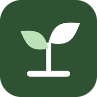

H. Mawih Sayur
Sayur App: pencatatan belanja, pesanan, tutup hari, dan laporan usaha sayur.
- Penyimpanan
- Google Sheets milik Anda
- Server
- Google Apps Script
- Mode offline
- Ya, kirim otomatis saat online
- Versi server
- -
Data usaha tersimpan di akun Google pemilik aplikasi, bukan di pihak ketiga.